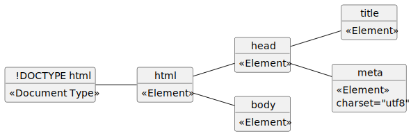

@startuml esempioUseCase
left to right direction
actor Cliente
actor "Societa di spedizioni" AS SS
actor Spedizioniere AS SP
rectangle "Sistema di vendita per corrispondenza" {
usecase InserisciOrdine
usecase AnnullaOrdine
usecase VerificaStatoOrdine
usecase RichiediCatalogo
usecase SpedisciProdotto
}
Cliente -- InserisciOrdine
Cliente -- AnnullaOrdine
Cliente -- VerificaStatoOrdine
Cliente -- RichiediCatalogo
SS -- SpedisciProdotto
SP -- SpedisciProdotto
@enduml
@startuml esempioClasse
hide circle
left to right direction
class ContoBancario {
**numeroConto** {id}
correntista
saldo
deposita()
preleva()
calcolaInteresse()
}
@enduml@startuml esempioAss11Conc
hide circle
hide methods
hide attributes
left to right direction
class Studente
class Badge
Studente "1" -- "0..1" Badge: identificare
@enduml
Letture dell’associazione:
@startuml esempioAss11Ristr1
hide circle
hide methods
left to right direction
class Studente {
**matricola** {id}
...
}
class Badge {
**codice** {id}
...
}
Studente "1" -- "0..1" Badge: identificare
@enduml
@startuml esempioAss11Ristr2
hide circle
hide methods
left to right direction
class Studente {
**matricola** {id}
codice
...
}
@enduml
Studente(matricola <PK>, codiceBadge, …)CREATE TABLE Studente (
matricola INTEGER PRIMARY KEY,
codiceBadge INTEGER,
…
);@startuml esempioAss1nConc
hide circle
hide methods
hide attributes
left to right direction
class Cliente {
**idCliente** {id}
...
}
class Prodotto {
**idProdotto** {id}
}
Cliente "0..1" -- "1..n" Prodotto: acquistare
@enduml
@startuml esempioAss1nRistr1
hide circle
hide methods
left to right direction
class Cliente {
**idCliente** {id}
...
}
class Prodotto {
**idProdotto** {id}
//idCliente// {fk}
...
}
Cliente "0..1" -- "1..n" Prodotto: acquistare
@enduml
Cliente(idCliente <PK>, …)
Prodotto(idProdotto <PK>, idCliente <FK>, …)CREATE TABLE Cliente (
idCliente INTEGER PRIMARY KEY,
…
);
CREATE TABLE Prodotto (
idProdotto INTEGER PRIMARY KEY,
idCliente INTEGER FOREIGN KEY REFERENCES Cliente(idCliente),
…
);@startuml esempioAssnnConc
hide circle
hide methods
hide attributes
class Societa {
**partitaIVA** {id}
...
}
class Azionista {
**CF** {id}
...
}
Societa "1..n" - "1..n" Azionista: Partecipazione
@enduml
@startuml esempioAssnnRistr1
hide circle
hide methods
class Societa {
**partitaIVA**: text(11) {id}
...
}
class Azionista {
**CF**: text(16) {id}
...
}
class Partecipazione {
//**partitaIVA**//: text(11) {id, fk}
//**CF**//: text(16) {id, fk}
quota
}
Societa "1..n" - "1..n" Azionista
(Societa, Azionista) -- Partecipazione
@enduml
@startuml esempioAssnnRistr2
hide circle
hide methods
left to right direction
class Societa {
**partitaIVA** {id}
...
}
class Azionista {
**CF** {id}
...
}
class Partecipazione {
//**partitaIVA**// {id, fk}
//**CF**// {id, fk}
quota
}
Societa "1" -- "1..n" Partecipazione
Partecipazione "1..n" -- "1" Azionista
@enduml
Societa(partitaIVA <PK>, …)
Azionista(CF <PK>, …)
Partecipazione(partitaIVA <PK, FK>, CF <PK, FK>, quota)CREATE TABLE Societa (
partitaIVA TEXT PRIMARY KEY CHECK (length(partitaIVA) = 11),
…
);
CREATE TABLE Azionista (
CF TEXT PRIMARY KEY CHECK (length(CF) = 16),
…
);
CREATE TABLE Partecipazione (
partitaIVA TEXT REFERENCES Societa(partitaIVA),
CF TEXT REFERENCES Azionista(CF),
quota REAL,
PRIMARY KEY(partitaIVA, CF)
);INTEGER Valore intero con
segno.
REAL Valore numerico
“reale”.
TEXT Una stringa di
caratteri.
BLOB (Binary Large OBject) Una
rappresentazione binaria di un qualunque file.
BOOL FALSE o
TRUE. In SQLite si usa INTEGER con la
convenzione per cui FALSE = 0 e TRUE = 1DATE Conserva la data. In SQLite
possiamo usare TEXT con date scritte secondo lo standard
ISO 8601: “YYYY-MM-DD”.DATETIME. Conserva l’istante
temporale. In SQLite possiamo usare TEXT e lo standard ISO
8601: “YYYY-MM-DD HH:MM:SS.SSS”.Le parentesi quadre ([ e ]) indicano
l’opzionalità.
SELECT colonne
[FROM tabella]
[WHERE condizione]
[GROUP BY colonne_raggruppamento]
[HAVING condizione_raggruppamento]
[ORDER BY colonne_ordinamento [ASC|DESC]]
[LIMIT numero [OFFSET inizio]];colonne := espressione [, espressione]*
espressione := nome_colonna |
letterale |
espressione AS nome |
espressione + espressione |
espressione - espressione |
espressione * espressione |
espressione / espresssione |
min(espressione) |
max(espressione) |
count(espressione) |
avg(espressione) |
espressione = espressione |
espressione <> espressione |
espressione <= espressione |
espressione < espressione |
espressione >= espressione |
espressione > espressione
espressione BETWEEN espressione AND espressione;
tabella := nome_tabella |
nome_tabella, nome_tabella |
nome_tabella join nome_tabella clausola_join;
join := , |
INNER JOIN |
CROSS JOIN |
LEFT OUTER JOIN |
RIGHT OUTER JOIN |
FULL OUTER JOIN |
NATURAL JOIN;
clausola_join : ON condizione |
USING(nome_attributo) |
"";
condizione := FALSE | TRUE |
condizione AND condizione |
condizione OR condizione |
NOT condizione |
espressioneSELECT colonne: Specifica le colonne che si
desidera visualizzare nel risultato della query. È possibile specificare
una o più colonne separate da virgole. Utilizzare * per
selezionare tutte le colonne della tabella. È possibile utilizzare alias
per le colonne usando la parola chiave AS (es.
nome_colonna AS alias). Si possono applicare funzioni
aggregate (es. COUNT(), SUM(),
AVG(), MIN(), MAX()) alle
colonne.FROM tabella]: Indica la tabella o le tabelle
da cui recuperare i dati. Se si interrogano più tabelle, è necessario
specificarle separate da virgole (e solitamente utilizzare clausole
JOIN ).WHERE condizione]: Filtra le righe in base a
una condizione specificata. La condizione può includere operatori di
confronto (=, >, <,
>=, <=, !=,
<>), operatori logici (AND,
OR, NOT), operatori IN,
BETWEEN, LIKE, IS NULL,
IS NOT NULL.ASC (ascendente) è l’ordine predefinito.DESC (discendente) ordina dal valore più alto al più
basso.OFFSET inizio (opzionale) specifica il numero
di righe da saltare prima di iniziare a restituire i risultati.| Nome tag | Descrizione |
|---|---|
<html> |
Definisce la radice di un documento HTML. Tutti gli altri elementi sono discendenti di questo tag. |
<head> |
Contiene metadati sul documento HTML, come il titolo, set di caratteri, link a fogli di stile, ecc. Questi non sono visualizzati direttamente nella pagina. |
<title> |
Definisce il titolo del documento, che appare nella barra del titolo del browser o nella scheda della pagina. |
<body> |
Contiene il contenuto visibile del documento HTML (testo, immagini, link, ecc.). |
<h1> - <h6> |
Definiscono le intestazioni di diverso livello (da quella più
importante <h1> a quella meno importante
<h6>). |
<p> |
Definisce un paragrafo di testo. |
<a> |
Definisce un hyperlink (collegamento). L’attributo href
specifica l’URL di destinazione. |
<img> |
Inserisce un’immagine nel documento. L’attributo src
specifica il percorso dell’immagine. |
<ul> |
Definisce una lista non ordinata (con punti elenco). |
<ol> |
Definisce una lista ordinata (con numeri o lettere). |
<li> |
Definisce un elemento di una lista (sia ordinata che non ordinata). |
<div> |
Definisce una sezione o un contenitore generico per altri elementi HTML. Viene spesso utilizzato per scopi di layout e stilizzazione. |
<span> |
Definisce una sezione o un contenitore inline generico per altri
elementi HTML. Simile a <div>, ma per elementi
inline. |
<table> |
Definisce una tabella. |
<tr> |
Definisce una riga all’interno di una tabella. |
<th> |
Definisce una cella di intestazione in una tabella. |
<td> |
Definisce una cella di dati in una tabella. |
<form> |
Definisce un modulo HTML utilizzato per raccogliere l’input dell’utente. |
<input> |
Definisce un campo di input all’interno di un modulo (testo, password, pulsante, ecc.). |
<button> |
Definisce un pulsante cliccabile. |
<select> |
Definisce un menu a tendina (lista di opzioni). |
<option> |
Definisce un’opzione all’interno di un elemento
<select>. |
<strong> |
Evidenzia il testo con una forte enfasi (solitamente visualizzato in grassetto). |
<em> |
Enfatizza il testo (solitamente visualizzato in corsivo). |
<br> |
Inserisce un’interruzione di riga singola. |
<hr> |
Definisce una linea orizzontale tematica (separatore). |
<!DOCTYPE html>
<html lang="it">
<head>
<meta charset="UTF-8">
<title>Pagina Vuota</title>
</head>
<body>
</body>
</html>@startuml dom_vuoto
left to right direction
object "html" as html {
<<Element>>
}
object "head" as head {
<<Element>>
}
object "body" as body {
<<Element>>
}
object "title" as title {
<<Element>>
}
object "meta" as meta {
<<Element>>
charset="utf8"
}
object "!DOCTYPE html" as doctype {
<<Document Type>>
}
doctype -- html
html -- head
html -- body
head -- title
head -- meta
@enduml
<table>
<caption>Tabella di Esempio</caption>
<thead>
<tr>
<th>Intestazione Colonna 1</th>
<th>Intestazione Colonna 2</th>
</tr>
</thead>
<tbody>
<tr>
<td>Dato Riga 1, Colonna 1</td>
<td>Dato Riga 1, Colonna 2</td>
</tr>
<tr>
<td>Dato Riga 2, Colonna 1</td>
<td>Dato Riga 2, Colonna 2</td>
</tr>
</tbody>
<tfoot>
<tr>
<td colspan="2">Nota a piè di pagina della tabella</td>
</tr>
</tfoot>
</table>| Intestazione Colonna 1 | Intestazione Colonna 2 |
|---|---|
| Dato Riga 1, Colonna 1 | Dato Riga 1, Colonna 2 |
| Dato Riga 2, Colonna 1 | Dato Riga 2, Colonna 2 |
| Nota a piè di pagina della tabella | |
@startuml tabella
left to right direction
object "table" as table {
<<Element>>
}
object "caption" as caption {
<<Element>>
Tabella di Esempio
}
object "thead" as thead {
<<Element>>
}
object "tbody" as tbody {
<<Element>>
}
object "tfoot" as tfoot {
<<Element>>
}
object "tr1 (thead)" as tr1_thead {
<<Element>>
}
object "th1" as th1 {
<<Element>>
}
object "th2" as th2 {
<<Element>>
}
object "tr1 (tbody)" as tr1_tbody {
<<Element>>
}
object "td1_1" as td1_1 {
<<Element>>
}
object "td1_2" as td1_2 {
<<Element>>
}
object "tr2 (tbody)" as tr2_tbody {
<<Element>>
}
object "td2_1" as td2_1 {
<<Element>>
}
object "td2_2" as td2_2 {
<<Element>>
}
object "tr (tfoot)" as tr_tfoot {
<<Element>>
}
object "td (tfoot)" as td_tfoot {
<<Element>>
}
table -- caption
table -- thead
table -- tbody
table -- tfoot
thead -- tr1_thead
tr1_thead -- th1
tr1_thead -- th2
tbody -- tr1_tbody
tr1_tbody -- td1_1
tr1_tbody -- td1_2
tbody -- tr2_tbody
tr2_tbody -- td2_1
tr2_tbody -- td2_2
tfoot -- tr_tfoot
tr_tfoot -- td_tfoot
@enduml
Questo manuale mostra un semplice esempio di come utilizzare PHP con PDO (PHP Data Objects) per interagire con un database SQLite e leggere i dati degli ordini da una tabella, per poi visualizzarli in una tabella HTML.
ordini. La
tabella ordini dovrebbe avere almeno le seguenti colonne (o
simili, adattando lo script):
id: Identificatore univoco dell’ordine (INTEGER PRIMARY
KEY).data_ordine: Data dell’ordine (TEXT o INTEGER).cliente: Nome del cliente (TEXT).prodotto: Nome del prodotto ordinato (TEXT).quantita: Quantità ordinata (INTEGER).Creazione del Database SQLite (se non esiste):
Se non hai già un database SQLite, puoi crearne uno utilizzando la riga di comando di SQLite o un tool grafico. Ad esempio, usando la riga di comando:
sqlite3 mio_database.dbPoi, crea la tabella ordini:
CREATE TABLE ordini (
id INTEGER PRIMARY KEY AUTOINCREMENT,
data_ordine TEXT NOT NULL,
cliente TEXT NOT NULL,
prodotto TEXT NOT NULL,
quantita INTEGER NOT NULL
);
INSERT INTO ordini (data_ordine, cliente, prodotto, quantita) VALUES
('2025-04-05', 'Mario Rossi', 'Laptop', 1),
('2025-04-04', 'Laura Bianchi', 'Mouse', 2),
('2025-04-04', 'Mario Rossi', 'Tastiera', 1),
('2025-04-03', 'Giovanni Verdi', 'Monitor', 1);
.exitQuesto creerà un file chiamato mio_database.db con la
tabella ordini e alcuni dati di esempio.
Creazione del File PHP:
Crea un file PHP chiamato, ad esempio, mostra_ordini.php
nella tua web directory.
Scrittura del Codice PHP:
<!DOCTYPE html>
<html lang="it">
<head>
<meta charset="UTF-8">
<title>Elenco Ordini</title>
<style>
table {
border-collapse: collapse;
width: 80%;
margin: 20px auto;
}
th, td {
border: 1px solid #ddd;
padding: 8px;
text-align: left;
}
th {
background-color: #f2f2f2;
}
</style>
</head>
<body>
<h1>Elenco Ordini</h1>
<?php
// Percorso al database SQLite
$dbFile = 'mio_database.db';
try {
// Connessione al database SQLite usando PDO
$pdo = new PDO("sqlite:" . $dbFile);
// Imposta la modalità di errore PDO su eccezioni
$pdo->setAttribute(PDO::ATTR_ERRMODE, PDO::ERRMODE_EXCEPTION);
// Query per selezionare tutti gli ordini
$sql = "SELECT id, data_ordine, cliente, prodotto, quantita FROM ordini";
$stmt = $pdo->prepare($sql);
$stmt->execute();
// Recupera tutti i risultati come un array associativo
$ordini = $stmt->fetchAll(PDO::FETCH_ASSOC);
// Verifica se ci sono ordini
if (count($ordini) > 0) {
echo '<table>';
echo '<thead>';
echo '<tr>';
echo '<th>ID</th>';
echo '<th>Data Ordine</th>';
echo '<th>Cliente</th>';
echo '<th>Prodotto</th>';
echo '<th>Quantità</th>';
echo '</tr>';
echo '</thead>';
echo '<tbody>';
// Itera attraverso gli ordini e crea le righe della tabella HTML
foreach ($ordini as $ordine) {
echo '<tr>';
echo '<td>' . htmlspecialchars($ordine['id']) . '</td>';
echo '<td>' . htmlspecialchars($ordine['data_ordine']) . '</td>';
echo '<td>' . htmlspecialchars($ordine['cliente']) . '</td>';
echo '<td>' . htmlspecialchars($ordine['prodotto']) . '</td>';
echo '<td>' . htmlspecialchars($ordine['quantita']) . '</td>';
echo '</tr>';
}
echo '</tbody>';
echo '</table>';
} else {
echo '<p>Nessun ordine trovato.</p>';
}
// Chiudi la connessione
$pdo = null;
} catch (PDOException $e) {
echo '<p>Errore di connessione o query: ' . $e->getMessage() . '</p>';
}
?>
</body>
</html>$dbFile = 'mio_database.db';:
Definisce il percorso al file del database SQLite. Assicurati che questo
percorso sia corretto.try...catch: Blocca il codice che
potrebbe generare eccezioni (come errori di connessione al database o
errori nella query).$pdo = new PDO("sqlite:" . $dbFile);:
Crea un nuovo oggetto PDO per connettersi al database SQLite
specificato. Il prefisso "sqlite:" indica il driver da
utilizzare.$pdo->setAttribute(PDO::ATTR_ERRMODE, PDO::ERRMODE_EXCEPTION);:
Imposta la modalità di gestione degli errori di PDO per lanciare
eccezioni in caso di problemi. Questo è utile per il debugging.$sql = "SELECT id, data_ordine, cliente, prodotto, quantita FROM ordini";:
Definisce la query SQL per selezionare tutte le colonne dalla tabella
ordini.$stmt = $pdo->prepare($sql);:
Prepara la query SQL per l’esecuzione. Anche se in questo caso la query
è semplice e non contiene input esterni, la preparazione è una buona
pratica per la sicurezza e l’efficienza, soprattutto con query più
complesse.$stmt->execute();: Esegue la query
preparata.$ordini = $stmt->fetchAll(PDO::FETCH_ASSOC);:
Recupera tutte le righe risultanti dalla query come un array
associativo. Ogni elemento dell’array $ordini è un array
con chiavi corrispondenti ai nomi delle colonne della tabella.count($ordini) > 0: Verifica se
sono stati trovati ordini nel database.<table>, <thead>,
<tbody>, <tr>,
<th>, <td>) per visualizzare i
dati.htmlspecialchars(): Questa funzione
viene utilizzata per rendere sicuri i dati visualizzati nella tabella
HTML, prevenendo potenziali attacchi XSS (Cross-Site Scripting)
convertendo caratteri speciali HTML nelle loro entità HTML.$pdo = null;: Chiude la connessione al
database impostando l’oggetto PDO a null.catch (PDOException $e): Cattura
qualsiasi eccezione PDO che si verifica e visualizza un messaggio di
errore.mio_database.db si trovi nella
stessa directory del file mostra_ordini.php (o specifica il
percorso corretto).mostra_ordini.php tramite il tuo web
browser (ad esempio, http://localhost/mostra_ordini.php,
modificando localhost e il percorso se necessario).Dovresti visualizzare una pagina web con una tabella HTML contenente i dati degli ordini estratti dal database SQLite. Se non ci sono ordini, verrà visualizzato il messaggio “Nessun ordine trovato.” Se si verifica un errore di connessione o query, verrà mostrato un messaggio di errore.